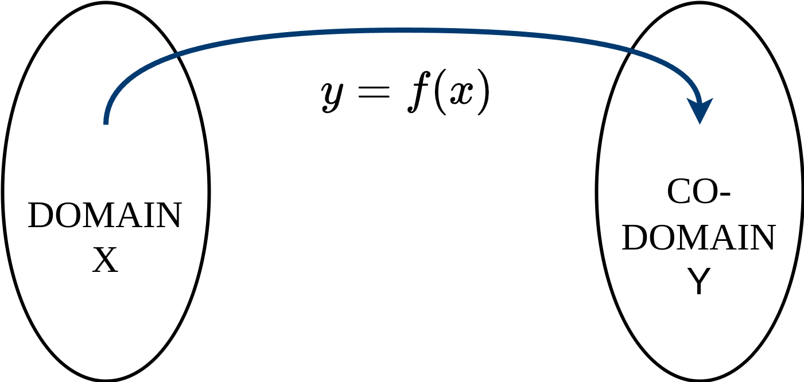
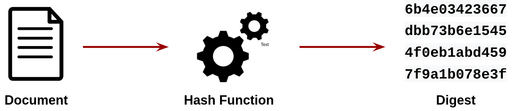
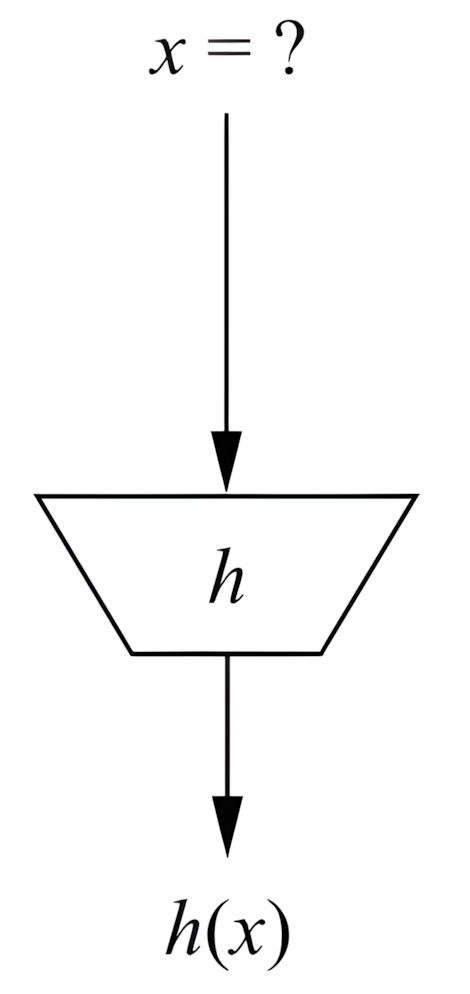
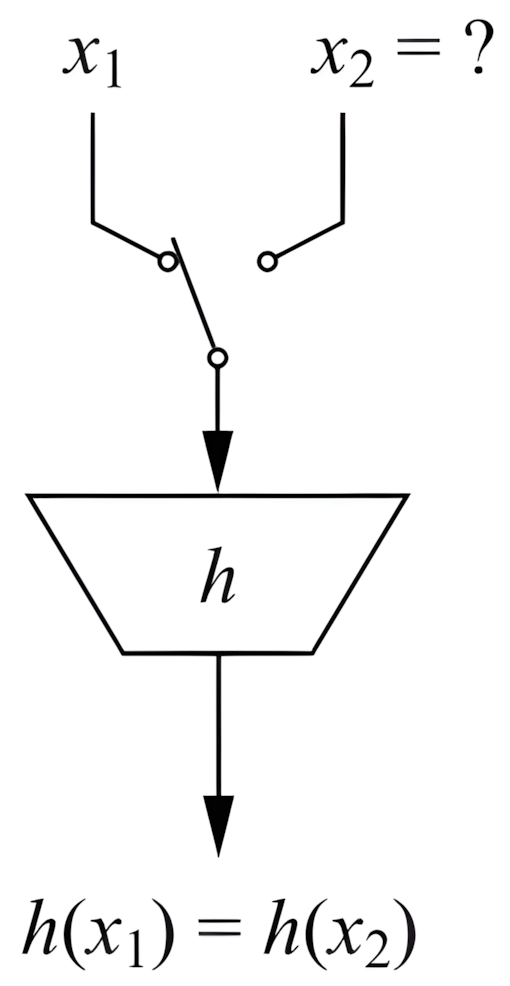
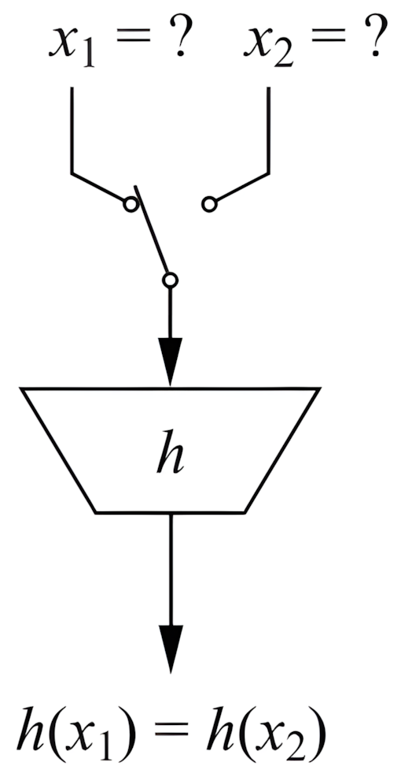
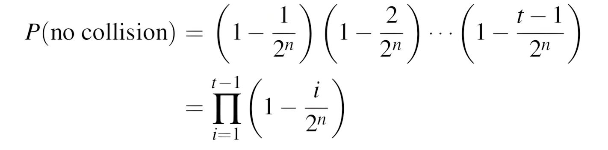
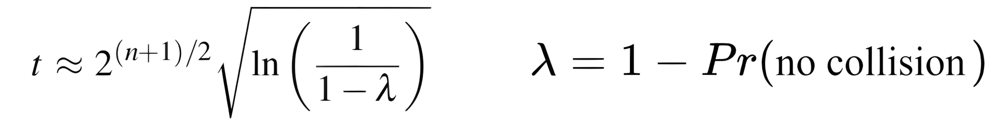
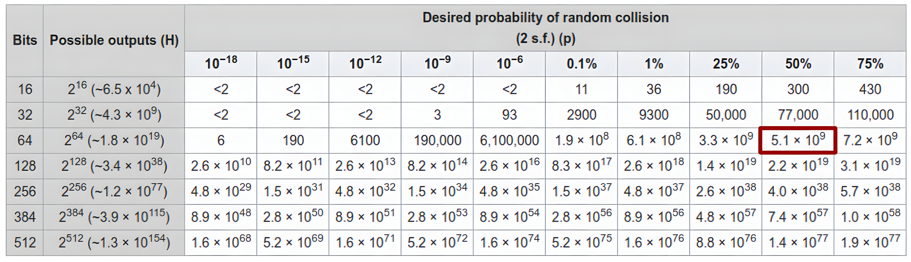
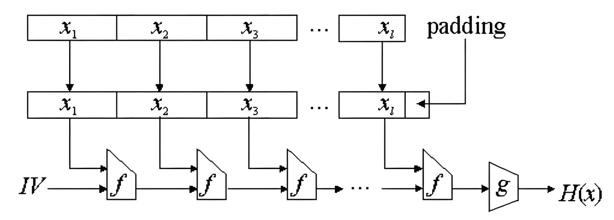

<!-- .slide: data-state="front hide-controls" --> <div id="title">Hashing and Digital Signatures</div> <div id="subtitle">Data Privacy and Security</div> <div id="date">Data Science and Management (DASMA)</div> --- <!-- .slide: data-state="break-blue hide-controls" --> # Hash Functions --- ## Hash Function <div class="content-center"> **GOAL**: Map large domains into smaller codomains: $|X| >> |Y|$. <br/> <p></p> <br/> <br/> - $y$ is often called the ***hash*** (value) or ***digest***. - HF are used extensively in data structures, e.g., dictionaries (example: $f(x) = ax + b \\mod p$) - Crucial to minimize collisions (collisions in dictionaries degrades performance) </div> --- ## Why we care for hash functions? <div class="content-center"> <p></p> <br/> <br/> For instance, we could use them for **data integrity**: 1. We want a compact value to represent a large amount of data 2. Changing even one bit in the data should make the value change (unpredictably!) </div> --- ## Cryptographic Hash Function <div class="content-center"> Properties of a cryptographic hash function: <br/> 1. **Arbitrary input length**: we would like to process even large files (e.g., an entire hard disk). Notice that encryption schemes often impose restriction on the input length. <br/> 2. **Fixed and short output length**: in several application context, we would like to have a compact output value given (even very large) input. Notice that encryption often have a output length that is equal or larger than the input length. <br/> 3. **Efficiency**: Fast even when processing large inputs. Notice that encryption schemes (even symmetric ones) can be slow on large files, hence, we should not use them for this purpose. </div> --- ## Security Requirements of Cryptographic Hash Functions (1) <div class="content-center"> <div class="columns-container columns-center"> <div class="col"> 1. **Preimage resistance**<br>(or one wayness):<br><br> For a given output $y = h(x)$, it is computationally infeasible to find any input $x$ such that $h(x) = y$, i.e., $h(x)$ is one-way. </div> <div class="col"> <p></p> </div> </div> </div> --- ## Security Requirements of Cryptographic Hash Functions (2) <div class="content-center"> <div class="columns-container columns-center"> <div class="col"> 2. **Second preimage resistance**<br>(or weak collision resistance):<br><br> Given $x_1$, and thus $h(x_1)$, it is computationally infeasible to find any $x_2$ such that $h(x_1) = h(x_2)$. </div> <div class="col"> <p></p> </div> </div> </div> --- ## Security Requirements of Cryptographic Hash Functions (3) <div class="content-center"> <div class="columns-container columns-center"> <div class="col"> 3. **Collision resistance** (or strong collision resistance):<br><br> It is computationally infeasible to find any pairs ($x_1$, $x_2$) where $x_1 \\neq x_2$ such that $h(x_1) = h(x_2)$. </div> <div class="col"> <p></p> </div> </div> </div> --- ## Hash functions without collisions? <div class="content-center"> Since by design an hash function maps a large domain into a smaller codomain then there is no possible way of avoiding collisions or implementing an hash function with no collision: <br/> - **Dirichlet's drawer principle**: *if you have 10 socks and only 9 drawers, then at least one drawer will contain more than one sock*. <br/> - **Pigeonhole principle**: *if you have 20 pigeons but only 19 boxes, then at least one box will contain at least two pigeons*. <br/> However, a cryptographic hash function requires that should be hard to find collisions. </div> --- ## Second preimage attack: brute force <div class="content-center"> Given ($x$, $h(x)$) an adversary can always perform a brute force attack to find ($x'$, $h(x')$) such that $x \\neq x'$ and $h(x) = h(x')$. If he does not exploit any property from the specific hash function $h()$, then adversary can try to compute $h(x')$ for any possible $x'$ until a collision is found. <br/> <br/> The expected attack complexity is: <div class="cell-center"> $2^n$ attempts where $n$ is the number of bits for the output </div> <br/> Hence $n$ must large enough to make the attack infeasible, e.g., $n = 80$. </div> --- ## Collision resistance attack <div class="content-center"> Now the attacker has two degrees of freedom to find a collision. This makes even a *simple* brute force attack much easier than what we may expect. <br/> Let's reason on the attack complexity using a simplified formulation of the problem: <br/> <div class="cell-center"> *if we have a party, how many people should I invite to have two people with the same birthday?* </div> <br/> This is also called the **Birthday Paradox**. <br/> <br/> <br/> <div class="alert alert-recall"><b>REMARK:</b> In second preimage, the simplified problem would be <i>if we have a party, how many people should I invite to have one people with birthday on a specific date XYZ?</i>. In this case, on average, we expect that the answer is 365 people.</div> </div> --- ## Birthday Paradox <div class="content-center"> $$ Pr(\\text{collision with 2 people}) = \\frac{1}{365} $$ $$ Pr(\\text{no collision with 2 people}) = 1 - \\frac{1}{365} $$ $$ Pr(\\text{no collision with 3 people}) = (1 - \\frac{1}{365})(1 - \\frac{2}{365}) $$ $$ \\vdots $$ $$ Pr(\\text{no collision with t people}) = \\prod_{i=1}^{t-1}(1 - \\frac{i}{365}) $$ How many people we need for a probability of at least 0.5 of one collision? $$ Pr(\\text{one collision with 23 people}) = 1- \\prod_{i=1}^{22}(1 - \\frac{i}{365}) \\approx 0.5 $$ What is the relation between 23 and 365? The root square of 365 is *almost* 23. </div> --- <div class="content-center"> Generalizing over hash functions with n-bit output: <p></p> After some simplifications (see 11.2.3 of Book *Understanding Cryptography*) we get that for 0.5 probability of a collision: <p></p> </div> --- <div class="content-center"> In practice, we can see that the attack complexity is roughly the square root of the output space. <br/> E.g., output length is n=80 bits, output space is 280 , the expected number of attempts to find a collision with 0.5 probability is: $$ \\sqrt{2^{80}} = 2^{40} $$ <br/> Hence, if want to have an expected complexity of at least $2^{80}$ (a number of attempts that is believed to be infeasible with the current state of the art), we need actually an output space of at least $2^{160}$! </div> --- ## Birthday Bound <div class="content-center"> <p></p> <br/> <br/> <div class="cell-center"> Result for $n=64$ and $p=0.5$ is called birthday bound </div> </div> --- ## Merkle-Damgård construction <div class="content-center"> Several cryptographic hash function takes as input a fixed block size (e.g., 256 bits). To fulfill the requirement on arbitrary input length, we can use the Merkle-Damgård Construction (MDC): <br/> <br/> <p></p> <br/> <br/> - IV is usually constant - if hash function f is collision resistant, then its MDC extension is collision resistant </div> --- ## Real-World Cryptographic Hash Functions <div class="content-center"> - MD (Message Digest) family: - **MD4** by Ronald Rivest (1990): first collision attack in 1995. In 2007, an attack can generate collisions in less than 2 MD4 hash operations. A theoretical preimage attack also exists. - **MD5** by Ronald Rivest (1992): collision attack in seconds on a 2.6 GHz Pentium 4 processor (complexity of 2^24.1). A chosen-prefix collision attack that can produce a collision for two inputs with specified prefixes within seconds, using off-the-shelf computing hardware (complexity 2^39). Pre-image attack still hard (2009: 2123.4) <br/> - SHA (Secure Hash Algorithm) family: - **SHA-1** by NSA (1995): the most popular cryptographic hash function, inspired by MD algorithms. Since 2005 considered not fully secure, Google was able to generate a collision in 2017. As of 2020, chosen-prefix attacks against SHA-1 are now practical. - **SHA-3**: current solution part of a standard, proposed in 2015 in response to an open call from NIST (similar to AES). </div> --- <!-- .slide: data-state="break-blue hide-controls" --> # Using Cryptographic Hash Functions in Python --- ## Python's hashlib Module <div class="content-center"> Python provides the `hashlib` module for cryptographic hash functions: - Built-in support for MD5, SHA-1, SHA-2 family (SHA-224, SHA-256, SHA-384, SHA-512), and SHA-3 family - Consistent API across all hash algorithms - No external dependencies required </div> --- ## Using MD5 in Python [INSECURE - Demo Only!] <div class="content-center"> MD5 is **broken** and should **NOT** be used for security purposes. However, it's still used for non-security applications like checksums. <br/> ```python import hashlib # Create MD5 hash object md5_hash = hashlib.md5() # Update with data (must be bytes) message = b"Hello, World!" md5_hash.update(message) # Get the hexadecimal digest digest = md5_hash.hexdigest() print(f"MD5 digest: {digest}") print(f"Digest length: {len(digest)} hex characters = {len(digest) * 4} bits") ``` <pre class="code-output"><code>MD5 digest: 65a8e27d8879283831b664bd8b7f0ad4 Digest length: 32 hex characters = 128 bits</code></pre> </div> --- <div class="content-center"> We can also hash in one step: <br/> ```python # One-step hashing digest = hashlib.md5(b"Hello, World!").hexdigest() print(f"MD5 digest: {digest}") # Even a small change produces a completely different hash digest2 = hashlib.md5(b"Hello, World?").hexdigest() print(f"MD5 digest (modified): {digest2}") ``` <pre class="code-output"><code>MD5 digest: 65a8e27d8879283831b664bd8b7f0ad4 MD5 digest (modified): 925de34d3e74f6439f636a7905458f90</code></pre> </div> --- ## Using SHA-1 in Python [DEPRECATED] <div class="content-center"> SHA-1 is **deprecated** for security purposes but still widely used in legacy systems. <br/> ```python import hashlib message = b"Hello, World!" # SHA-1 produces 160-bit (20-byte) hash sha1_digest = hashlib.sha1(message).hexdigest() print(f"SHA-1 digest: {sha1_digest}") print(f"Digest length: {len(sha1_digest)} hex characters = {len(sha1_digest) * 4} bits") # Compare with MD5 md5_digest = hashlib.md5(message).hexdigest() print(f"\nMD5 digest: {md5_digest}") print(f"Digest length: {len(md5_digest)} hex characters = {len(md5_digest) * 4} bits") ``` <pre class="code-output"><code>SHA-1 digest: 0a0a9f2a6772942557ab5355d76af442f8f65e01 Digest length: 40 hex characters = 160 bits MD5 digest: 65a8e27d8879283831b664bd8b7f0ad4 Digest length: 32 hex characters = 128 bits</code></pre> </div> --- ## Using SHA-3 in Python [RECOMMENDED] <div class="content-center"> SHA-3 is the current standard and recommended for security applications. <br/> ```python import hashlib message = b"Hello, World!" # SHA-3 comes in different variants (224, 256, 384, 512 bits) sha3_256_digest = hashlib.sha3_256(message).hexdigest() sha3_512_digest = hashlib.sha3_512(message).hexdigest() print(f"SHA3-256 digest: {sha3_256_digest}") print(f"Length: {len(sha3_256_digest) * 4} bits") print(f"\nSHA3-512 digest: {sha3_512_digest}") print(f"Length: {len(sha3_512_digest) * 4} bits") ``` <pre class="code-output"><code>SHA3-256 digest: 1af17a664e3fa8e419b8ba05c2a173169df76162a5a286e0c405b460d478f7ef Length: 256 bits SHA3-512 digest: 38e05c33d7b067127f217d8c856e554fcff09c9320b8a5979ce2ff5d95dd27ba35d1fba50c562dfd1d6cc48bc9c5baa4390894418cc942d968f97bcb659419ed Length: 512 bits</code></pre> </div> --- ## Practical Example: File Integrity Verification <div class="content-center"> A common use case is verifying file integrity by comparing hash digests. <br/> We first define an helper function to hash a file in chunks: ```python import hashlib def hash_file(filename, algorithm='sha3_256'): """Compute hash of a file using specified algorithm""" h = hashlib.new(algorithm) # Read file in chunks to handle large files with open(filename, 'rb') as f: while chunk := f.read(8192): h.update(chunk) return h.hexdigest() ``` </div> --- <div class="content-center"> ```python import tempfile import os # Create a temporary file with some data with tempfile.NamedTemporaryFile(mode='wb', delete=False) as f: temp_filename = f.name f.write(b"This is important data that must not be tampered with!") # Hash the file using our function original_hash = hash_file(temp_filename, 'sha3_256') print(f"Original file hash: {original_hash}") ``` <pre class="code-output"><code>Original file hash: cabfe67e2c691e017ff43d03cce1afed9dac74eef0c604551ee21cf5bd12fc2a</code></pre> </div> --- <div class="content-center"> ```python # Simulate receiving the same file received_hash = hash_file(temp_filename, 'sha3_256') print(f"Received file hash: {received_hash}") # Verify integrity if original_hash == received_hash: print("✓ File integrity verified!") else: print("✗ File has been tampered with!") # Clean up os.unlink(temp_filename) ``` <pre class="code-output"><code>Received file hash: cabfe67e2c691e017ff43d03cce1afed9dac74eef0c604551ee21cf5bd12fc2a ✓ File integrity verified!</code></pre> </div>